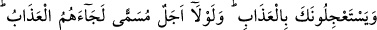

56. Ey îman eden kullarım! Şüphesiz, benim arzım geniştir. O halde (nerede
güven içinde olacaksanız orada) yalnız bana kulluk edin.
57. Her can ölümü tadacaktır. Sonunda bize döndürüleceksiniz.
58. Îman edip güzel işler yapanları, (evet) muhakkak ki onları, içinde ebedî
kalmak üzere altlarından ırmaklar akan cennet köşklerine yerleştireceğiz. (Böyle
iyi) işler yapanların mükâfatı ne güzeldir!
59. Onlar, sabreden kimselerdir ve yalnız Rablerine güvenip dayanmaktadırlar.
60. Nice canlı var ki, rızkını (yanında) taşımıyor. Onlara da size de rızık veren
Allah’tır. O, her şeyi işitir ve bilir.
61. Andolsun ki onlara: “Gökleri ve yeri yaratan, güneşi ve ayı buyruğu altında
tutan kimdir?” diye sorsan, mutlaka, “Allah” derler. O halde nasıl (haktan) çevrilip
döndürülüyorlar?
62. Allah rızkı kullarından dilediğine bol bol verir, dilediğine de kısar. Şüphesiz
Allah her şeyi hakkıyla bilendir.
63. Andolsun ki onlara: “Gökten su indirip onunla ölümünün ardından yeryüzünü
canlandıran kimdir?” diye sorsan, mutlaka, “Allah” derler. De ki: (Öyleyse) hamd
da Allah’a mahsustur. Fakat onların çoğu (söyledikleri üzerinde) düşünmezler.
“De ki: Benimle sizin aranızda şâhid olarak Allah yeter.” Benden ve sizden sâdır
olan ahvâle şâhiddir. “O, göklerde ve yerde ne varsa bilir.” Benim ve sizin hâlinizden
de haberdardır.
“
” kelimesinin başındaki bâ ( ) harf-i cerri, sıla içindir.
“Bâtıla inanıp Allah’ı inkâr edenler (var ya).” Bâtıla yâni puta, şeytana ve
benzerlerine inananlar; birbirini kuvvetlendiren deliller ile asıl inanılması gereken
Allah’a küfredenler...
“İşte ziyana uğrayacaklar onlardır.”
Onlar, âhiret ticaretinde kaybetmişler, îmânı küfür ile değiştirmişler ve aslî fıtratı
reddederek îmâna götüren sem’î delilleri zâyi etmişlerdir.
Bu âyet, nefis gözüyle bakan kimsenin bâtıldan başkasını göremeyeceğine işâret eder.
Ömrün bir hazinedir, her an ondan bir mücevher eksilmekte
Böyle değerli ve lâtif bir hazineyi boş yere telef etme